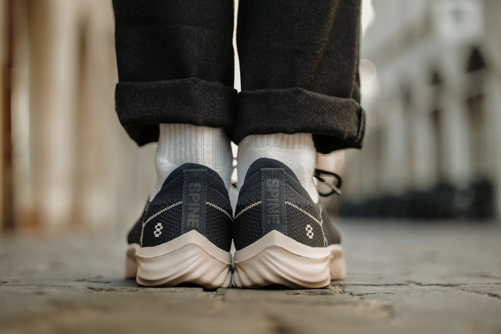
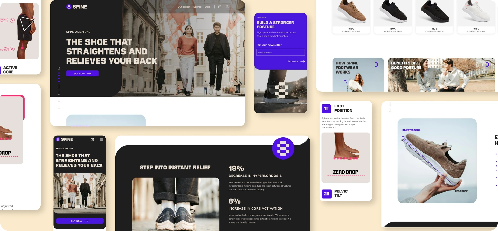
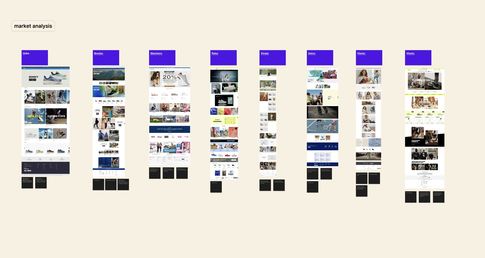
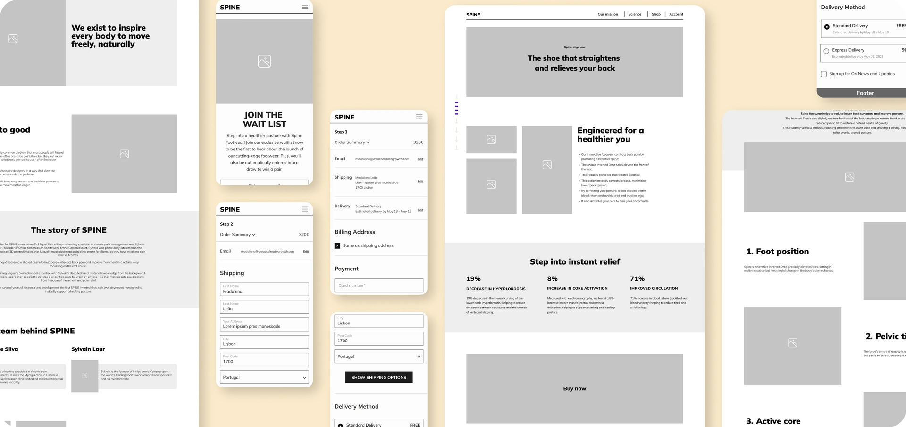
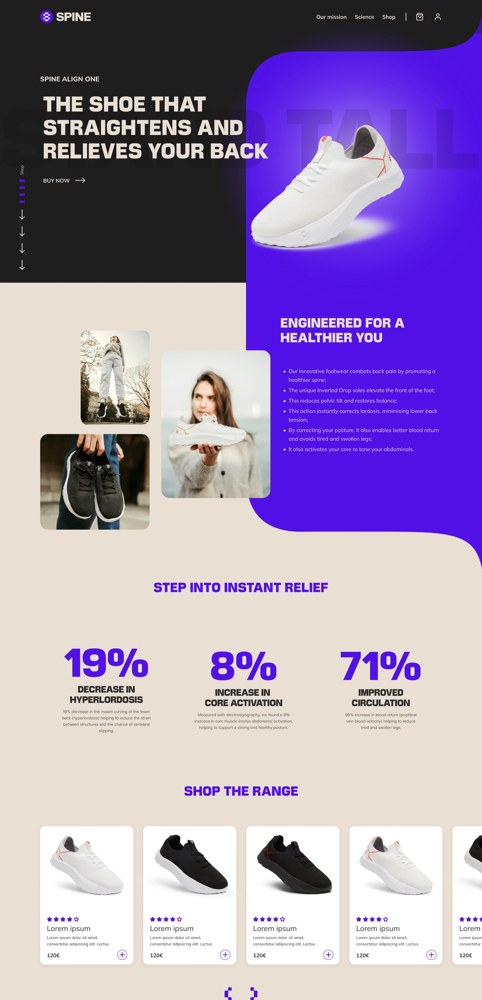
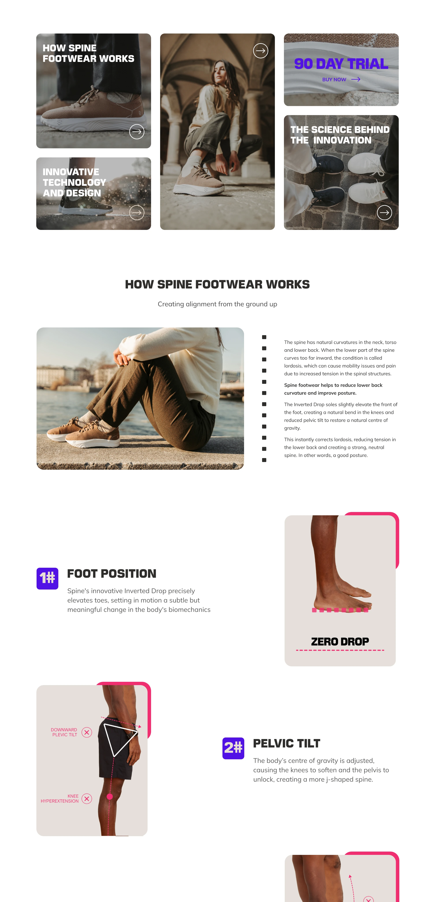
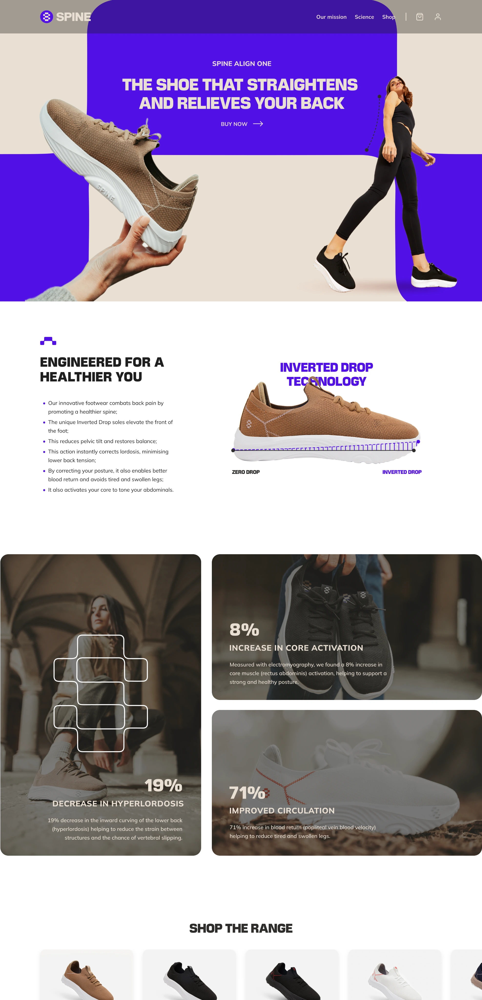
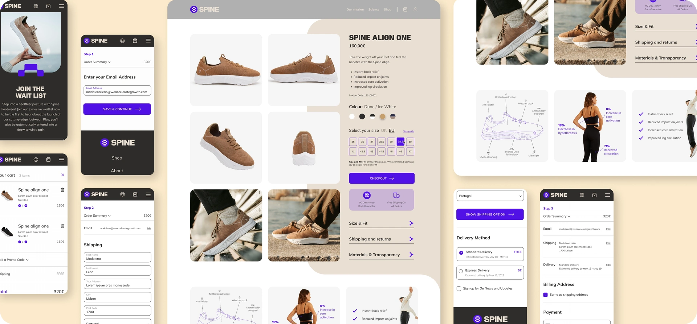

SPINE
From first impression.
To checkout.
I designed the visual identity and responsive shopping experience for Spine Footwear, from market analysis and user needs to wireframes, visual iterations and checkout.
Explore the thinking
VISUAL IDENTITY · RESPONSIVE E-COMMERCE
- MY ROLE
- Product Designer
- TIMELINE
- 6 months
- TOOLS
- Figma · Illustrator
- SECTOR
- E-commerce · Footwear
- THE TEAM
- 1 Product Designer
2 Developers · 1 PM
THE WEBSITE + MY ROLE
A product story.
A shopping experience.
Spine Footwear is a brand that specialises in innovative shoes designed to promote better posture and alleviate back pain.
For this project, I designed the visual identity for the Spine website. I began with an in-depth market analysis, researching competitors and how they presented their products, while also defining our target audience.
I created responsive layouts for mobile and desktop, strategically placing calls to action to support engagement and the purchase journey.
The goal
The design needed to communicate functionality, aesthetics and wearer comfort, presenting the shoes for everyday use. User-friendly product information would explain features such as adjustability and breathability.

The product story across desktop and mobile.
MARKET ANALYSIS + USER NEEDS
Understand the market.
Define the needs.
After analysing the market, I was able to define the user’s needs. The site needed to provide detailed product information, easy navigation and a secure purchase process.
These needs shaped an informative shopping experience for customers interested in footwear, comfort and the product’s technology.

Clear information
Details about how the shoes are designed to promote better posture and alleviate back pain.
Product listings
An easy-to-navigate, non-repetitive catalogue with product descriptions, sizes and prices.
Science and benefits
Accessible explanations of the technology behind the shoes and the benefits they offer.
Purchase options
A simple and secure purchasing process.
Customer support
Contact information and a clear return policy.
User reviews
Testimonials and reviews from other customers to build trust.
WIREFRAMES + ITERATIONS
Structure first.
Then visual refinement.
Based on the user flow, I developed mid-fidelity wireframes and adapted the layouts to different breakpoints.
The first visual iterations explored the balance between product information, imagery and calls to action. Each version made the challenges of contrast, visual clutter and information density clearer.

Build the structure first.
Based on the user flow created previously, I designed the foundations of the website with mid-fidelity wireframes. I then adapted the mobile wireframes for responsive design, creating layouts for different breakpoints.

Reduce competing elements.
This first layout was crowded, with too many elements competing for attention. Text over images and colourful backgrounds also lacked sufficient contrast, affecting readability.

Give the key messages space.
The second version had too many images and text boxes, causing visual clutter and making it hard for users to focus on key messages.

Keep the product story legible.
The third version still packed a lot of information together, making it difficult for users to quickly grasp the key benefits and features of the product.
CHECKOUT PROCESS
Keep the final
step clear.
Spine’s checkout process required a blend of elegance, simplicity and user-centred design.
An intuitive order summary was essential. Customers needed easy options to edit their shopping basket, shipping information and payment method without restarting the entire process.
A well-defined visual hierarchy made the most important actions distinct. Prominent calls to action, such as “Proceed to Checkout” and “Continue”, were paired with easy-to-read fonts and high-contrast colours.
Check website
Responsive product and purchase screens.
ONE CASE STUDY. PART OF A BIGGER PICTURE.